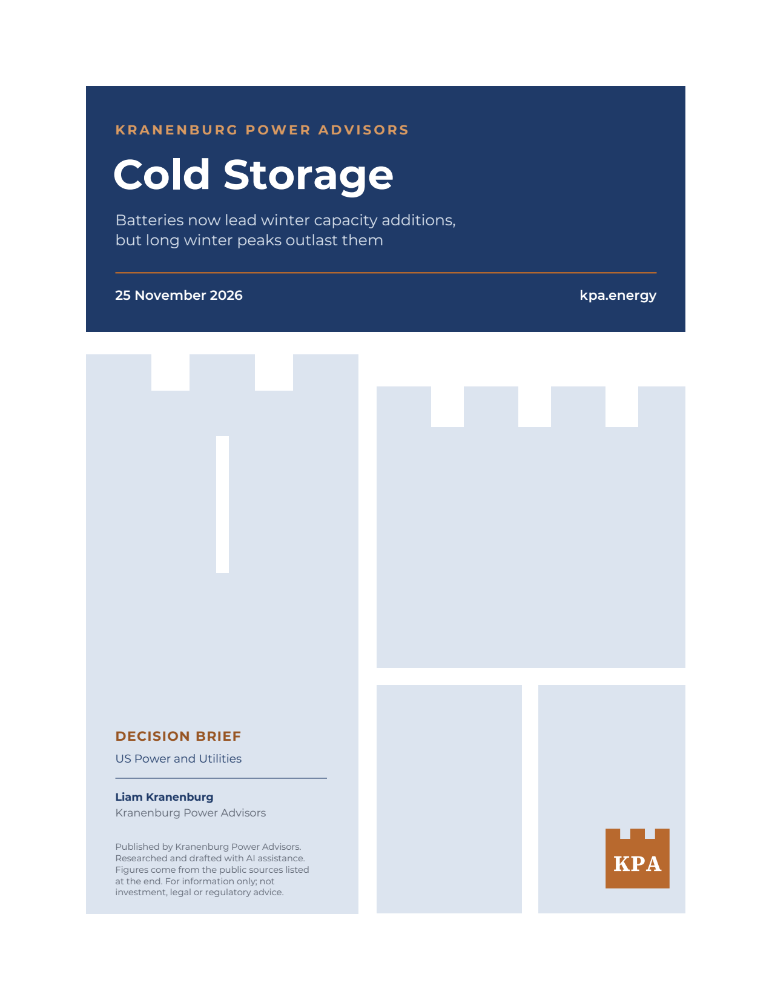
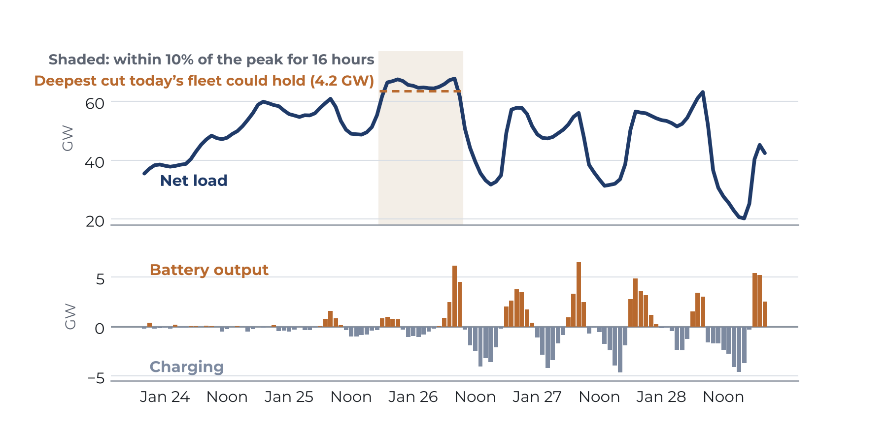
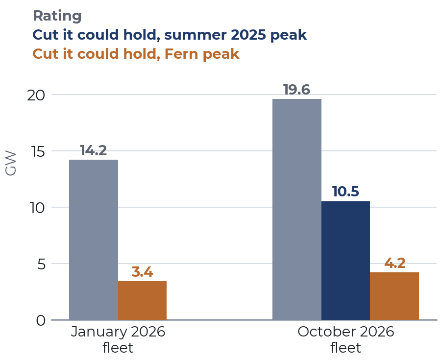

Cold Storage
Batteries now lead winter capacity additions, but long winter peaks outlast them

Key implications
On 18 November, the North American Electric Reliability Corporation (NERC) reported that new batteries had added more to US winter capacity than any other resource: 9.2 gigawatts (GW) at the peak hour, from 20.6 GW of nameplate. A battery runs for a few hours, then must recharge. During Winter Storm Fern, net load in Texas (demand minus wind and solar) stayed within 10% of its peak for 16 straight hours; at summer 2025's peak, it did so for four. KPA analysis of EIA data shows the effect. At last winter's peaks, today's fleets in California and the Southwest could have held peak net load down by at most 43% and 47% of their rating, against 72% and 76% in summer. NERC counts both at 85%: what batteries can deliver in the peak hour, not the cut they can hold through a long evening. The question is less how many batteries the West builds than how long its winter peaks last.
- Batteries now add more winter capacity on paper than any other resource. NERC counts 9.2 GW of winter on-peak capacity from new batteries within a 26.2 GW rise in resources. Its counts vary fivefold by region: 16% of battery nameplate in Texas, 85% in California and the Southwest.
- Long winter peaks outlast batteries built for short summer ones. Across Fern's 10 highest net-load hours in Texas, batteries averaged under 1 GW, 7% of their rating, rationing a short supply for the morning peak; they even charged overnight while net load sat near its peak. Today's 19.6 GW fleet, with 1.7 hours of storage on average, could have cut Fern's peak by at most 4.2 GW.
- NERC's peak-hour count is nearly double what Western batteries could sustain. Applied to NERC's figures, last winter's limits would cut the West's 19.5 GW battery count to about 10.1 GW. Texas, counted at 16%, is the one region whose count already fits its winter.
—November 2026
What is new in this brief
KPA searched for prior publication of each finding before release. These results were not found in that search; everything else is credited to its source.
- At last winter's peaks, today's California fleet could have cut peak net load by at most 43% of its rating, and the four large Southwest utilities' fleets by 47%. At summer 2025's peaks, the figures are 72% and 76%; NERC counts both regions at 85%.
- Applied to NERC's regional figures, those limits would reduce the West's 19.5 GW of winter on-peak battery capacity to about 10.1 GW.
- During Fern, ERCOT's net load stayed within 10% of its peak for 16 consecutive hours, against four at summer 2025's peak. Cutting the peak by the January fleet's full rating would have taken 8.7 times its stored energy.
- ERCOT's batteries charged at about 1 GW overnight on 25–26 January while net load was less than 3.5 GW below the storm's peak.
- The 5.4 GW of batteries ERCOT added between January and October 2026 raise the most it could cut a Fern-shaped peak by 0.8 GW: about 14 megawatts (MW) for every 100 MW added.
Versions and corrections
Changes in version 1.1 (25 November 2026). The basis for the second call now uses figures reproducible from the published data: six hours at the 2025–26 winter peak and four at the summer 2025 peak, replacing an unpublished figure for winter 2025; the call itself is unchanged. The basis for the first call and the body now say which fleet each storage figure describes (1.5 hours in February 2025, 1.6 hours in January 2026, 1.7 hours in October 2026). Removed an unsourced description of PJM's 59% four-hour storage rating as weighted toward winter risk. The four Southwest utilities are described as the rest of the six fleets, not most of the remainder; the six are no longer called the largest fleets, and the EIA-860M note now states that FPL, PSCO and SOCO were left out and why. NERC's battery lead is now stated as on-peak capacity, not nameplate. The note on Fern battery output now cites the American Clean Power Association for the 10 GWh reserve. Spelling corrected. No headline number changed; the analysis script's output labels were corrected.
Published numbers are never changed silently; each correction is dated and listed here, in the PDF and on the updates page.
Cite this brief
Kranenburg, Liam. “Cold Storage: Batteries now lead winter capacity additions, but long winter peaks outlast them.” Kranenburg Power Advisors, KPA Brief no. 4, 25 November 2026, version 1.1. https://kpa.energy/briefs/cold-storage/
Charts
The three figures
Select a chart to open it full size.
Figure 1
During Fern, Texas net load stayed near its peak for 16 hours

Figure 2
Battery fleets could hold far smaller cuts at winter's peaks than summer's

Figure 3
Texas added 5.4 GW of batteries; its Fern peak cut rose only 0.8 GW

Findings
Ten findings the brief stands on
Each one is recomputed from public data or credited to whoever published it first. Filter by theme, or draw one at random.
Sources
Where every number comes from
All public. The brief's own calculations are reproducible from these.
- North American Electric Reliability Corporation (NERC), 2026–2027 Winter Reliability Assessment, November 2026 (released 18 November 2026; resource additions, assessment-area battery figures, ERCOT risk hours, review of winter 2025–26); American Public Power Association, 18 November 2026; R. Walton, Utility Dive, 19 November 2026.
- US Energy Information Administration (EIA), Form EIA-860M, Preliminary Monthly Electric Generator Inventory, October 2026 (battery power and energy by balancing authority).
- Astrapé Consulting for ERCOT, Effective Load Carrying Capability Study, final report, 11 February 2025; E3, Resource Adequacy Assessment: Desert Southwest, May 2026 (sponsored by Southwest utilities); P. Denholm and others (NREL), "The potential for battery energy storage to provide peaking capacity in the United States," Renewable Energy 151 (2020); A. Mills and P. Rodriguez (LBNL), "A simple and fast algorithm for estimating the capacity credit of solar and storage," Energy 210 (2020).
- EIA, Form EIA-930, Hourly Electric Grid Monitor, six-month balance files for January 2025 to June 2026 (demand, solar, wind and battery output by balancing authority; battery storage reported from 1 January 2025).
- ERCOT, Monthly Operational Overview, January 2026 (Fern peak demand); ERCOT, System Operations Update to the Board, 4 February 2026 (forecast, large-load reductions, battery state of charge); ERCOT, 2025 peak demand records.
- Life:Powered (Texas Public Policy Foundation), "ERCOT still has a winter reliability problem," 19 November 2026.
- ERCOT, Monthly Outlook for Resource Adequacy, December 2026 and January 2027.
- PJM Interconnection, ELCC class ratings for the 2028/2029 and 2029/2030 Base Residual Auctions; California Public Utilities Commission, Decision D.25-06-048 and slice-of-day resource adequacy fact sheet, June 2025.
- EIA, Today in Energy: "Battery storage capacity averaged 70% growth over the last three years," 7 August 2026; "New U.S. electric generating capacity expected to reach a record high in 2026," 20 February 2026.
- Modo Energy, ERCOT battery fleet research, 19 October 2026 (fleet size and duration of new additions); Modo sells market analytics to battery owners and investors.
- KPA calculations (Figures 1–3, the peak-shaving limits by region and season, the comparison with NERC's regional counts, and the ERCOT figures for Fern) are reproducible from the data files and code published with this brief.
- Prior work this brief builds on: Life:Powered, 19 November 2026 (battery output about 6% of installed capacity overnight during Fern; critique of ERCOT's storage count); American Clean Power Association (industry trade group), Winter Storm Fern analysis, 2026, and Latitude Media, 27 January 2026 (battery share of the Fern peak); Tyba, Winter Storm Fern storage performance, 2026; Federal Reserve Bank of Dallas, 4 November 2025, Ascend Analytics, 3 December 2024, and Texas Public Policy Foundation, 8 June 2026 (longer winter peaks in ERCOT); the ELCC studies in source 3 (storage counts for less as peaks lengthen and fleets grow); mgrid.org, 25 November 2026.
Get the next brief
New briefs come out a few times a year. Leave your email to hear when the next one is published.
Email signup opens soon. Until then, follow by RSS.